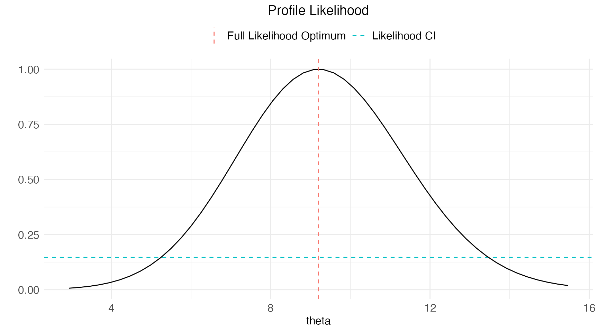

Welcome to this guide on how to work with ctsmTMB for
modelling time-series data.
In this example we consider a simple 1D mean-reverting stochastic differential equation model, the Ornstein-Uhlenbeck process: Here , and are (fixed effects) parameters to be estimated.
We assume that we have direct observations of the state , at discrete times for i.e. the observation equation is
The residuals are assumed to be Gaussian, and we choose the variance as
Here is a fixed effect parameter (also to be estimated), and is a known time-dependent input. The input is added here for sake of introduction, just to demonstrate how time-dependent inputs are specified. We could for example imagine the input to be given by such that certain observations have twice the standard deviation of others, and thus carry less weight (information) about the latent state . In the remainder of this vignette however, we simply set .
Initialising
We initialise a ctsmTMB model object using
Printing the model object in the console reveals some basic information about it:
print(model)## This ctsmTMB model contains:
## States 0
## Diffusions 0
## Observations 0
## Inputs 1
## Parameters 0Add system equations
First we specify the stochastic differential equation governing our latent state . This is straight-forward using R formulas, choosing appropriate character names for the parameters.
model$addSystem(dx ~ theta * (mu - x) * dt + sigma_x * dw)We emphasize that drift terms must be multiplied by a dt
and diffusion terms by a dw or dw# where # is
some number e.g. dw2. A single state equation may contain
any number of diffusion terms i.e.
model$addSystem(dx ~ theta * (mu - x) * dt + sigma_x1 * dw1 + x * sigma_x2 * dw2 + dw3)Add observation equations
Now the observation equations of the system must be specified. This amounts to specifying the mean and variance of the residual normal distribution. First the mean is specified i.e.
model$addObs(y ~ x)The variable used on the left-hand side, here y,
determines the name of the relevant observations to-be provided in the
data for maximum likelihood estimation later.
Add observation variances
Next we specify the residual variance, using the name given to the
observation equation above, in addObs:
model$setVariance(y ~ sigma_y^2 * u)Add inputs
Next, we declare which variables are time-dependent inputs via
model$addInput(u)These shall must also be provided in the data later, similar to observations.
Add parameters
We must also specify the (fixed effects) parameters, and in addition their initial/lower/upper values for the estimation.
model$setParameter(
theta = c(initial = 5, lower = 0, upper = 20),
mu = c(initial = 0, lower = -10, upper = 10),
sigma_x = c(initial = 1e-1, lower = 1e-5, upper = 5),
sigma_y = c(initial = 1e-1, lower = 1e-5, upper = 5)
)A parameter can be fixed by supplying just a single value. It is for instance typically useful to fix observation noise parameters because simultaneous identification of observation and process noise is difficult in practice, and some knowledge about observation noise may be known. Thus, let us fix to a somewhat arbitrary but reasonable value:
model$setParameter(
sigma_y = 0.05
)Let’s inspect the model object again, and see that it is no longer empty:
print(model)## This ctsmTMB model contains:
## States 1
## Diffusions 1
## Observations 1
## Inputs 2
## Parameters 4
##
## System Equations:
## dx ~ theta * (mu - x) * dt + sigma_x * dw
##
## Observation Equations:
## y: y ~ x + e e ~ N(0, sigma_y^2 * u)
##
## Inputs:
## u
##
## Parameters:
## theta, mu, sigma_x, sigma_y
##
## Fixed Parameters:
## sigma_ySet initial state and covariance
Lastly the state distribution at the initial time point must be specified via its mean and variance.
initial.state <- list(mean=1, cov=1e-1)
model$setInitialState(initial.state=initial.state)Note that in higher dimensions the provided covariance
cov must be a matrix. A simple initial covariance could
just be a scaled identity e.g. in two dimensions
cov = 1e-1 * diag(2)
Generate Data
The model has now been fully specified, and state and parameter estimation can be performed on the data at hand.
In this particular example we generate some fake data. This can be achieved by simulating a stochastic realization of the stochastic differential equation, and adding some observation noise to it.
We achieve this task using the simulate method of the
model object, which perform stochastic simulations based on the Euler-Maruyama
scheme. The user is referred to the simulation
vignette for further details.
We choose the true parameters to be
The code below performs the simulation and prepares data for likelihood estimation:
library(ggplot2)
# Set simulation settings
set.seed(11)
true.pars <- c(theta=10, mu=1, sigma_x=1, sigma_y=0.05)
dt.sim <- 1e-3
t.end <- 5
t.sim <- seq(0, t.end, by=dt.sim)
df.sim <- data.frame(t=t.sim, u=1, y=NA)
# Perform simulation
sim <- model$simulate(data=df.sim,
pars=true.pars,
n.sims=1,
silent=T,
initial.state=initial.state)
x <- sim$states$x$i0$x1
# Extract observations from simulation and add noise
iobs <- seq(1,length(t.sim), by=10)
t.obs <- t.sim[iobs]
y = x[iobs] + true.pars["sigma_y"] * rnorm(length(iobs))
# Create data-frame
data <- data.frame(
t = t.obs,
u = 1,
y = y
)
# Plot the simulation and observed data
ggplot() +
geom_line(aes(x=t.sim,y=x,color="Simulation")) +
geom_point(aes(x=t.obs,y=y,fill="Observations")) +
ctsmTMB:::getggplot2theme() + labs(x="t", y="x",color="",fill="")
Perform estimation
We can now pass the data to the estimate
method. This will build the model, perform various checks, construct the
computational graph for automatic differentiation, and then perform the
optimization.
Note: The data must contain an
increasing time column named t and columns for each of the
specified inputs and observations, in this case u and
y.
fit <- model$estimate(data)## Checking and setting data...## Constructing objective function and derivative tables...## Minimizing the negative log-likelihood...## 0: 7625.6873: 5.00000 0.00000 0.100000
## 10: -384.86492: 7.81233 1.12328 1.01154## Optimization finished!:
## Elapsed time: 0.013 seconds.
## The objective value is: -3.870659e+02
## The maximum gradient component is: 1.2e-04
## The convergence message is: relative convergence (4)
## Iterations: 17
## Evaluations: Fun: 20 Grad: 18
## See stats::nlminb for available tolerance/control arguments.## Returning results...## Finished!Note: a time-consuming step in the estimation procedure is construction of the AD graph of the underlying likelihood function, but the time spent for this task relative to the optimization time will even out for models with more parameters.
The output generated during the optimization is the objective (negative log-likelihood) value and the parameter values at the current step. The optimizer used by ctsmTMB is the nlminb optimizer from the stats library.
We refer the user to the estimation
vignette for further details on the available arguments to
estimate, and to the ‘use
another optimizer’ vignette for details on how to use another
optimizer than nlminb.
Inspecting the fit object
The fit object contains the following entries
names(fit)## [1] "convergence" "nll" "nll.gradient" "nll.hessian" "par.fixed"
## [6] "sd.fixed" "cov.fixed" "tvalue" "Pr.tvalue" "states"
## [11] "residuals" "observations" "private"The first is a boolean which indicates whether estimation was successful
fit$convergence## [1] 0which is just a copy of the optimization message from
stats::nlminb.
The second is the likelihood value at the found optimum
fit$nll## [1] -387.0659the third is the likelihood gradient at the optimum
fit$nll.gradient## theta mu sigma_x
## -3.161067e-06 -1.208976e-04 -4.518894e-05and the fourth is the likelihood hessian at the optimum
fit$nll.hessian## theta mu sigma_x
## theta 0.2720836 0.1521370 -4.8642930
## mu 0.1521370 469.9827505 0.7193716
## sigma_x -4.8642930 0.7193716 553.4547321Parameter estimates
Printing the fit object reveals a standard coefficient
matrix for the parameter estimates.
print(fit)## Coefficent Matrix
## Estimate Std. Error t value Pr(>|t|)
## theta 9.199369 2.088424 4.4049 1.296e-05 ***
## mu 1.064966 0.046133 23.0848 < 2.2e-16 ***
## sigma_x 0.946988 0.046301 20.4529 < 2.2e-16 ***
## ---
## Signif. codes: 0 '***' 0.001 '**' 0.01 '*' 0.05 '.' 0.1 ' ' 1We can see the parameter estimate and the associated standard error together with a one-dimensional t-test statistic and associated P-value for the common hypothesis test $$ H_{0}: p = 0 \\ H_{1}: p \neq 0 $$
Note The large uncertainty in here is primarily caused by a relatively short time-series (2 seconds), relative to the characteristic time of the process .
The parameter-related information can be extracted from the fit object. The estimated (fixed) parameters:
fit$par.fixed## theta mu sigma_x
## 9.1993693 1.0649661 0.9469882The standard deviations of the (fixed) parameters:
fit$sd.fixed## theta mu sigma_x
## 2.08842441 0.04613283 0.04630096The covariance of the (fixed) parameters:
fit$cov.fixed## theta mu sigma_x
## theta 4.361516497 -1.470533e-03 3.833512e-02
## mu -0.001470533 2.128238e-03 -1.569071e-05
## sigma_x 0.038335117 -1.569071e-05 2.143779e-03The parameter covariance is found by inverting the likelihood hessian at the found optimum i.e.:
solve(fit$nll.hessian)## theta mu sigma_x
## theta 4.361516497 -1.470533e-03 3.833512e-02
## mu -0.001470533 2.128238e-03 -1.569071e-05
## sigma_x 0.038335117 -1.569071e-05 2.143779e-03State estimates
The optimal state distributions associated with the estimated parameters can be extracted from the model object as well.
In this example we used the Extended Kalman filter (this is the
default filtering algorithm specified by the argument
method="ekf" to estimate). This method
produces prior and posterior state estimates. The
prior estimates are one-step-ahead predictions, while the posterior
estimated are these priors but updated against the current-time
available observations. The user is referred to the Kalman
Filter vignette for more information on the theoretical details.
The states can easily be plotted using the provided S3 plot.ctsmTMB.fit method. Here we plot both prior and posterior states against the observations:
plot(fit, type="states",state.type="prior",against="y")
plot(fit, type="states",state.type="posterior",against="y")Note: The decrease in variance for the posterior state estimate is expected because these states are updated to the observations.
Residual analysis
Model validation typically involves inspecting the properties of
prediction residuals. The model residuals are contained in
fit$residuals with the entries:
names(fit$residuals)## [1] "residuals" "sd" "normalized" "cov"We can also easily generate a residual analysis plot with the
S3 plot.ctsmTMB.fit method. This is actually the
default arguments to plot.ctsmTMB.fit. This produces a
time-series of the residuals, a histogram, a quantile-quantile plot,
auto/partial-correlations and a cumulative periodogram:
plot(fit)Profiling the likelihood
We can perform likelihood profiling with the profile S3
method on the fit object, and further plot the result by
calling the plot S3 method on that.
For an example we can inspect the profile likelihood of as follows:
a <- fit$par.fixed["theta"] - 3*fit$sd.fixed["theta"]
b <- fit$par.fixed["theta"] + 3*fit$sd.fixed["theta"]
prof <- profile(fit, list("theta"=seq(a,b,length.out=50)), silent=TRUE)
plot(prof)
# a <- fit$par.fixed["mu"] - 8*fit$sd.fixed["mu"]
# b <- fit$par.fixed["mu"] + 8*fit$sd.fixed["mu"]
# prof <- profile(fit, list("mu"=seq(a,b,length.out=50)), silent=TRUE)
# plot(prof)
# a <- fit$par.fixed["theta"] - 5*fit$sd.fixed["theta"]
# b <- fit$par.fixed["theta"] + 5*fit$sd.fixed["theta"]
# c <- fit$par.fixed["mu"] - 10*fit$sd.fixed["mu"]
# d <- fit$par.fixed["mu"] + 10*fit$sd.fixed["mu"]
# prof <- profile(fit, list("theta"=seq(a,b,length.out=50),
# "mu"=seq(c,d,length.out=50)), silent=TRUE)
# plot(prof)Extra: Algebraic equations
The model definitions can be kept clean by defining algebraic expressions which replace variables in the defined equations. A typical scenario where algebraic equations can be used is to rename parameters which must be strictly positive.
Example In this model should be a strictly positive parameter . This can be achieved by setting the following algebraic expression:
model$setAlgebraics(theta ~ exp(logtheta))The effect of this is to replace all occurrences of
theta in the model equations with
exp(logtheta). The final thing to do is to add a new
parameter entry to the model object which describes values for
logtheta